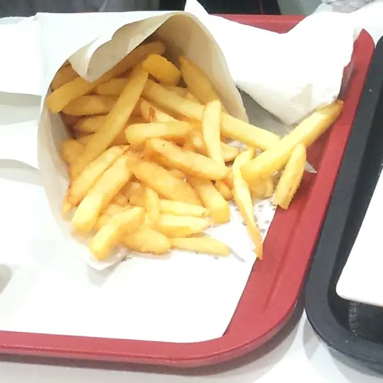
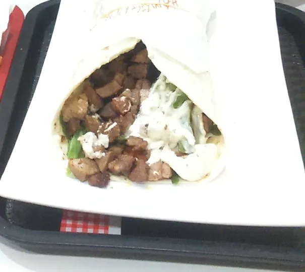
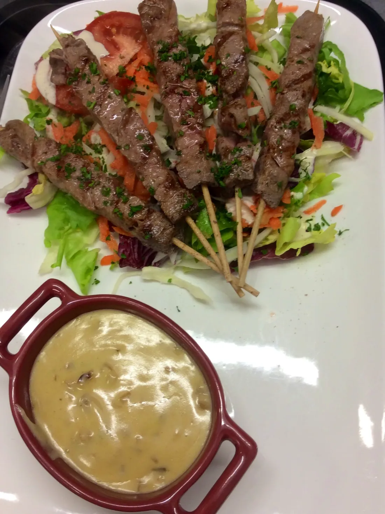
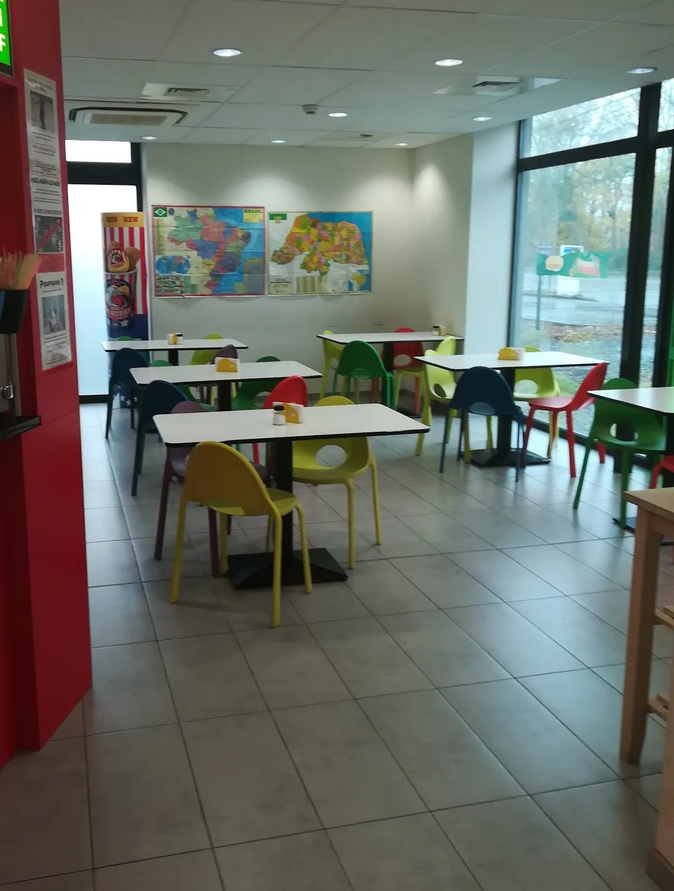
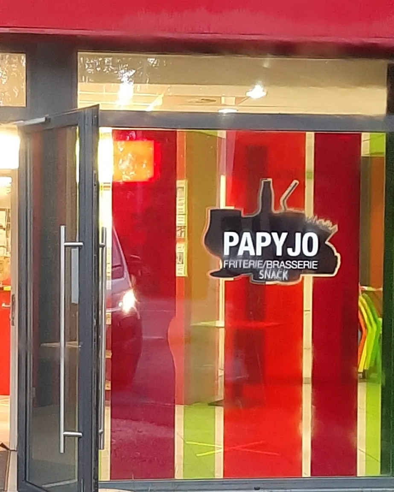
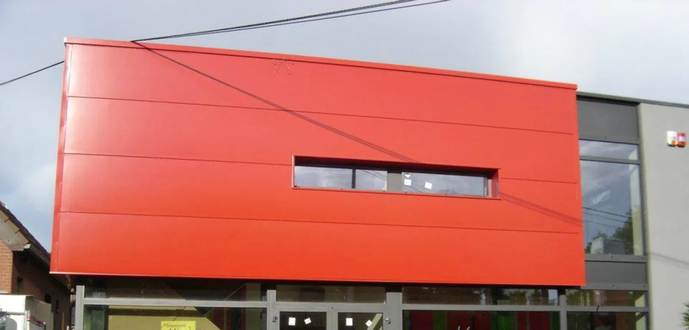

Les frites
Servies en cornet de papier, dorées, à manger sur place ou à emporter.
« […] repas excellent (frites succulentes), personnes sympathiques […] »Les 'Ouches, avis Google 5 étoiles
Friterie · Brasserie · Snack
Des frites en cornet, la pitta et la sauce à l'ail faites maison, une salle claire pour manger sur place. Six soirs sur sept, au bord de la route de Couvin, à Somzée.
Du mardi au dimanche · 17 h 30 – 21 h 30
Sur place ou à emporterEntrée accessible en fauteuil



Au comptoir
Ce qui sort de la cuisine de Papy Jo, en photos, tel que servi en salle ou emballé pour la route.
Les prix sont affichés au tableau des tarifs, en salle.
Sans attendre au comptoir
Choisissez le soir et l'heure de retrait, écrivez ce que vous voulez : votre commande vous attend à l'heure dite.
« Attention important: passez commande par téléphone :-) »Le conseil d'une habituée, Julie T., sur Google
Retrait de 17 h 45 à 21 h 15, du mardi au dimanchePlutôt par téléphone ? 071 22 14 28
Au tableau
Le tableau des tarifs aligne les grandes sauces de friterie. Celle que les habitués recommandent, l'ail, est faite par la patronne.
Sauces lues sur le tableau des tarifs, en salle. La liste exacte et les prix sont au comptoir.
Sur place
De grandes baies vitrées, des tables blanches, des chaises jaunes, vertes, rouges et bleues. Derrière la vitrine rayée de rouge et de vert, on mange au chaud.



Plateaux en salle, barquettes et cornets pour la route.
« […] l'hygiène irréprochable […] », écrit Julie T. sur Google.
Entrée accessible en fauteuil roulant.
Route de Couvin, à Somzée : on se gare devant la vitrine.
Ils l'ont écrit sur Google
Du mardi au dimanche, de 17 h 30 à 21 h 30
| lundi | fermé |
|---|---|
| mardi | 17 h 30 – 21 h 30 |
| mercredi | 17 h 30 – 21 h 30 |
| jeudi | 17 h 30 – 21 h 30 |
| vendredi | 17 h 30 – 21 h 30 |
| samedi | 17 h 30 – 21 h 30 |
| dimanche | 17 h 30 – 21 h 30 |